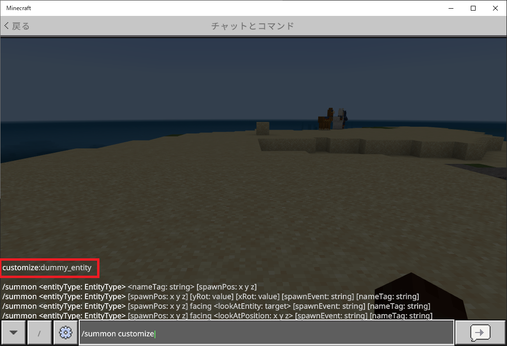
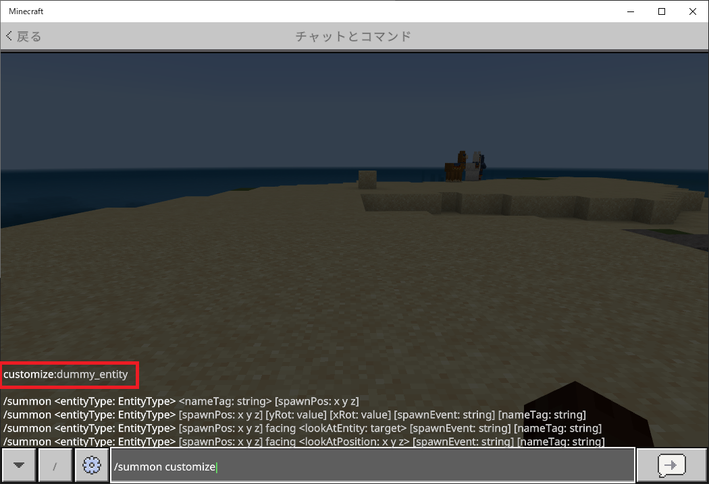

【ダミーエンティティ】
はじめに
ここでは本環境で利用しているダミーエンティティの作り方をまとめています。
モブ等のエンティティとは異なりダミーエンティティが作れるようになると、システム的に色んなコンテンツで応用できるようになります。
また、アニメーションの必要がないエンティティを作るだけであれば、特別なツールを使わなくてもJSONデータを組み立てるだけなのでお手軽です。
モブ等のエンティティとは異なりダミーエンティティが作れるようになると、システム的に色んなコンテンツで応用できるようになります。
また、アニメーションの必要がないエンティティを作るだけであれば、特別なツールを使わなくてもJSONデータを組み立てるだけなのでお手軽です。
定義ファイルの内訳
カスタムエンティティを作るためにはビヘイビアパックとリソースパックの両方が必要になりますが、最低限以下の３ファイルを追加すれば実装は完了します。
※ここでは
※ここでは
customize:dummy_entityというエンティティIDを使う想定でファイル名を記載しています。
/<ビヘイビアパックのルート>
/entities
dummy_entity.json
/<リソースパックのルート>
/entity
dummy_entity.entity.json
/models
/entity
dummy_entity.geo.json
定義ファイルの内容
ビヘイビアパック
{
"format_version": "1.17.10",
"minecraft:entity": {
"description": {
"identifier": "customize:dummy_entity",
"is_spawnable": false,
"is_summonable": true
},
"components": {}
}
}
上記の黄色の部分は固定だとお考えください。
- ・description
-
- identifier
- エンティティIDを設定します。
- is_spawnable
- スポーンエッグの利用可否（true：利用可能、false：利用不可）。
- is_summonable
summonコマンドの利用可否（true：利用可能、false：利用不可）。
- ・components
-
このブロックでエンティティが持つさまざまな性質や機能を定義する事ができるので、見た目以外の部分でオリジナルコンテンツを作る時はこの部分の定義がメインになるでしょう。
ダミーエンティティを作るだけなら空のままで問題ありません。
定義内容についての詳細は以下の>> コンポーネント定義の項目をご覧ください。
リソースパック
{
"format_version": "1.10.0",
"minecraft:client_entity": {
"description": {
"identifier": "customize:dummy_entity",
"materials": {
"default": "entity_alphatest"
},
"textures": {
"default": "textures/entity/dummy_entity"
},
"geometry": {
"default": "geometry.dummy_entity"
},
"render_controllers": [
"controller.render.item_sprite"
]
}
}
}
上記の黄色の部分は固定だとお考えください。
- ・description
-
- identifier
- エンティティIDを設定します。
- materials
-
ダミーエンティティの場合は
entity_alphatestで問題ありません。
テクスチャに透明な部分がある場合に指定するものですが、テスト時はこの方が都合がいいでしょう。
- textures
-
テクスチャのパスを設定します。
textures/entityに格納するので、今回の場合はネームスペースを省いてtextures/entity/dummy_entityとしています。
ダミーエンティティとして表示させない場合はテクスチャファイルがなくても動作しますが、テストする時の事を考慮して設定しておいた方がいいでしょう。
- geometry
-
models/entityで定義しているジオメトリ名を設定します。
今回の場合はネームスペースを省いてgeometry.dummy_entityとしています。
- render_controllers
-
テストする時の事を考慮して
controller.render.item_sprite（スプライト制御）にしておいた方がいいでしょう。
{
"format_version" : "1.16.0",
"minecraft:geometry" : [
{
"description" : {
"identifier" : "geometry.dummy_entity",
"texture_width" : 0.0,
"texture_height" : 0.0
}
}
]
}
上記の黄色の部分は固定だとお考えください。
- ・description
-
- identifier
-
ジオメトリ名を設定します。
今回の場合はネームスペースを省いてgeometry.dummy_entityとしています。
- texture_width
-
モデルの横サイズを指定します。
表示する予定のないダミーエンティティであればゼロで問題ありません（スプライト表示の時は必要としないパラメータです）。
- texture_height
-
モデルの縦サイズを指定します。
表示する予定のないダミーエンティティであればゼロで問題ありません（スプライト表示の時は必要としないパラメータです）。
テストしてみる
ここまで定義できればダミーエンティティとしての最低限の実装は完了です。
この時点で正しく召喚できるのかテストしておいた方がいいでしょう。
但し今のままでは召喚できたとしても透明のままなので目視で確認する事ができません。
そこで以下の手順に従ってテストを進めてください。
基本的にデザインやサイズは何でも構いませんが、バニラのリソースパック内にある
先ほど作ったリソースパック内の
この修正によってダミーエンティティがスプライト表示されるようになります。
ちなみにバニラのエンダーパールの表示もスプライト制御で実装されています。
※コメントの書き方は▶アドオンパックことはじめ（コメント記法）のページでも掲載しましたが

これが表示されればJSONファイルが正しく認識されています。
後は実際に
召喚できる事が確認できたら
ダミー画像も含めて残しておくと今後のテスト時にも有効活用できます。
この時点で正しく召喚できるのかテストしておいた方がいいでしょう。
但し今のままでは召喚できたとしても透明のままなので目視で確認する事ができません。
そこで以下の手順に従ってテストを進めてください。
①ダミー画像を設置
リソースパック内のtextures/entityの場所にダミー画像を格納してください。基本的にデザインやサイズは何でも構いませんが、バニラのリソースパック内にある
textures/items/ender_pearl.png（エンダーパール）あたりを使っておけば、わざわざ作る必要がないので手間が省けるでしょう。entity/dummy_entity.entity.json内のtexturesの項目で設定したdummy_entityという名前がファイル名になるのでdummy_entity.pngという名前にしておきます。②スプライト表示にする
バニラデータにはスプライト表示をサポートするJSONデータがあらかじめ用意されていますので、今回はこれを利用します。先ほど作ったリソースパック内の
entity/dummy_entity.entity.jsonというファイルの内容を以下の黄色の部分と同じになるように修正します。
{
"format_version": "1.10.0",
"minecraft:client_entity": {
"description": {
"identifier": "customize:dummy_entity",
"materials": {
"default": "entity_alphatest"
},
"textures": {
"default": "textures/entity/dummy_entity"
},
"geometry": {
// "default": "geometry.dummy_entity"
"default": "geometry.item_sprite"
},
"render_controllers": [
"controller.render.item_sprite"
]
}
}
}
この修正によってダミーエンティティがスプライト表示されるようになります。
ちなみにバニラのエンダーパールの表示もスプライト制御で実装されています。
※コメントの書き方は▶アドオンパックことはじめ（コメント記法）のページでも掲載しましたが
//（スラッシュ２つ）を入力する事でコメント扱いにできます。③コマンドで召喚する
コマンド行でsummon customizeというところまで入力すると、入力補助の機能が働いて以下の赤枠部分のように選択できるエンティティIDが表示されるはずです。
これが表示されればJSONファイルが正しく認識されています。
後は実際に
summonコマンドを使って適当な座標に召喚すると以下のように出現します。召喚できる事が確認できたら
entity/dummy_entity.entity.json内のコメントアウトを元に戻してgeometry.item_spriteの方をコメントアウトして残しておくのがいいでしょう。ダミー画像も含めて残しておくと今後のテスト時にも有効活用できます。
コンポーネント定義
これまでの設定でベースの部分は出来上がりました。
あとは用途に応じてビヘイビアパック内にある
ここでは
※一部例外はありますが、基本的に定義されていないデータブロック、および値は暗黙的にデフォルト値が適用されます。
あとは用途に応じてビヘイビアパック内にある
entities/dummy_entity.jsonファイルのcomponentsブロックに都度必要な定義を追加していく事になります。ここでは
componentsブロックのうち本環境で汎用的に使っている部分だけをピックアップしておきます。- ・minecraft:nameable
-
名札や
summonコマンドによる命名が可能かどうかを設定します。
minecraft:nameableブロック自体が未定義の場合はネーミングできません。- allow_name_tag_renaming（デフォルト:true）
-
trueの場合、名札を使って名前を変更できます。
- always_show（デフォルト:false）
-
trueの場合、名前は常に表示されます。
- ・minecraft:health
-
スポーン時の体力値を設定します。
- value
-
デフォルトの体力値を整数、または範囲で設定します。
範囲で設定する時は以下の通り。- range_min
-
デフォルト体力の最小値を設定します。
- range_max
- デフォルト体力の最大値を設定します。
- max
-
最大の体力値を整数で設定します。
- ・minecraft:breathable
-
呼吸可否等の設定値を設定します。
- breathe_blocks（デフォルト:なし）
-
呼吸できるブロックのリストを設定します。
- breathes_air（デフォルト:true）
-
trueの場合、空気中で呼吸できます。
- breathes_lava（デフォルト:true）
-
trueの場合、溶岩で呼吸できます。
- breathes_solids（デフォルト:false）
-
trueの場合、固体ブロックで呼吸できます。
- breathes_water（デフォルト:false）
-
trueの場合、水中で呼吸できます。
- inhale_time（デフォルト:0）
-
呼吸ゲージを最大まで回復するまでの秒数を設定します。
- non_breathe_blocks（デフォルト:なし）
-
呼吸できないブロックのリストを設定します。
- suffocate_time（デフォルト:-20）
-
窒息ダメージ間の秒数を設定します（マイナスで指定する事に注意）。
- total_supply（デフォルト:15）
- 息を止められる秒数を設定します。
- ・minecraft:collision_box
-
衝突判定の範囲をブロック単位で設定します。
ここで設定した値によって影の大きさも変化します。
- height（デフォルト:1.0）
-
衝突判定の高さを設定します。
- width（デフォルト:1.0）
- 衝突判定の幅を設定します。
- ・minecraft:pushable
-
エンティティを押し出す事ができるかどうかを設定します。
- is_pushable（デフォルト:true）
-
trueの場合、他のエンティティによって押し出す事ができます。
- is_pushable_by_piston（デフォルト:true）
- trueの場合、ピストンによって押し出す事ができます。
- ・minecraft:physics
-
物理法則を設定します。
minecraft:physicsブロック自体が未定義の場合は物理法則が適用されません。- has_collision（デフォルト:true）
-
trueの場合、オブジェクトと衝突します。
- has_gravity（デフォルト:true）
-
trueの場合、重力の影響を受けます。
- push_towards_closest_space（デフォルト:false）
- trueの場合、ブロックに埋まった時に最も近い空き領域に押し出されます。
※一部例外はありますが、基本的に定義されていないデータブロック、および値は暗黙的にデフォルト値が適用されます。